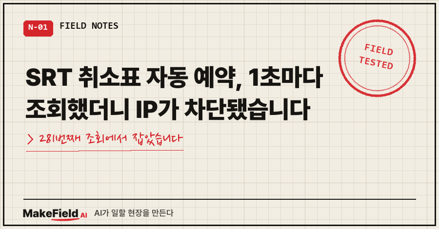
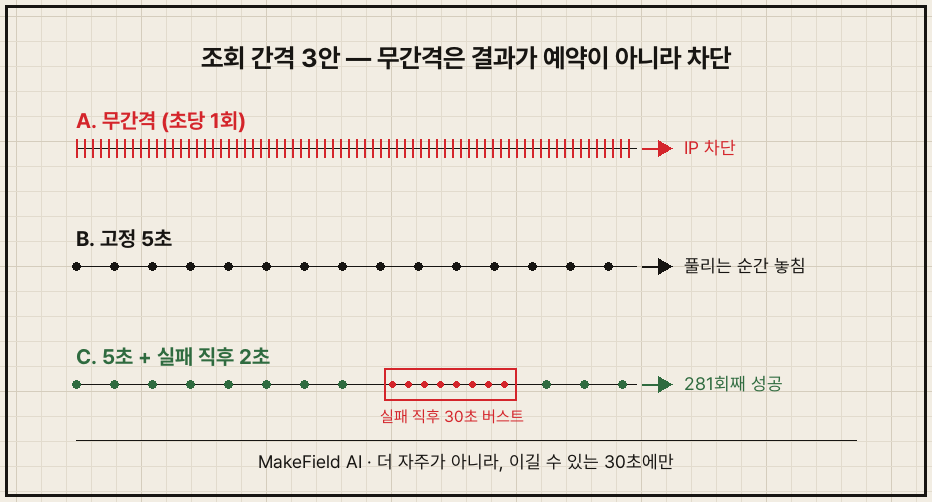
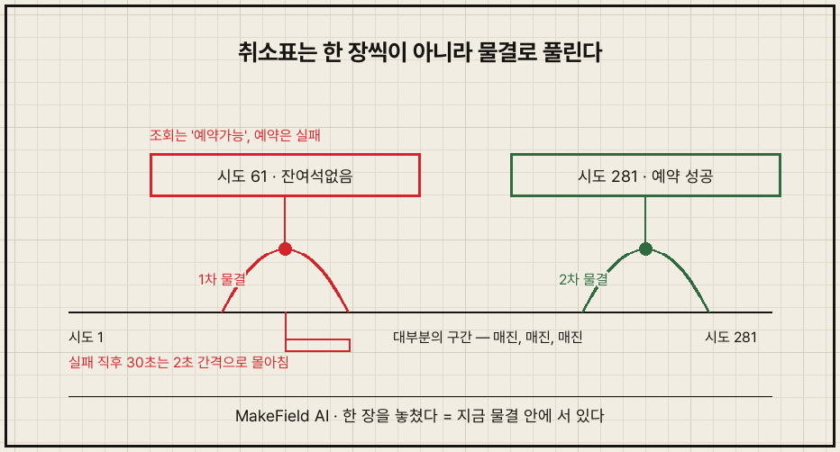
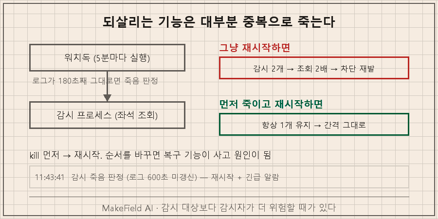

SRT 취소표 자동 예약을 만들어 돌려놓고, 제 컴퓨터가 새벽 기차 좌석을 조회한 횟수는 281번이었습니다.
처음엔 1초에 한 번씩 두드렸어요. 빨리 볼수록 유리하다고 생각했거든요. 결과는 예약이 아니라 차단이었습니다. 화면에 뜬 단어가 이거였어요.
abnormal access결론부터 적을게요.
SRT 취소표 자동 예약은 조회를 자주 해서 잡는 게 아니라, 예약이 한 번 실패한 직후 30초를 노려서 잡습니다. 평소엔 5초 간격으로 느긋하게 보다가, 실패 신호가 뜨는 순간부터 30초 동안만 2초 간격으로 몰아치는 구조예요.
저는 설비 자동화 쪽에서 15년을 보냈습니다. 장비끼리 통신할 때 조회 주기를 몇 초로 잡을지 가지고 다투는 게 일상인 동네예요. 너무 자주 물어보면 상대가 응답을 못 하고, 너무 뜸하면 놓치고요.
이번엔 그 감각을 기차표에 그대로 써먹었습니다. 2026년 8월에 있었던 일이고, 자리가 없어 못 산 표를 취소표로 기다린 경우입니다.
1. 빨리 조회하면 유리할 줄 알았어요
처음 만든 건 단순했습니다. 로그인해서, 원하는 열차의 좌석 상태를 조회하고, 자리가 있으면 예약. 그걸 쉬지 않고 반복하는 코드였어요.
간격은 안 넣었습니다. 넣을 이유를 못 느꼈거든요. 빨리 볼수록 먼저 잡는 거 아닌가요.
몇 분 지나서 조회가 통째로 막혔습니다. 비정상 접근으로 분류된 거예요.
당연한 일이었어요. 사람이 새로고침을 초당 한 번씩 열 몇 분을 계속할 리가 없잖아요. 서버 입장에선 사람이 아니라는 게 너무 뻔히 보이는 패턴이었던 겁니다.
이건 제 잘못이 맞습니다. 상대 서버 자원을 제 편의로 갉아먹은 거니까요. 그래서 그다음부터는 간격을 코드에 하한으로 박아버렸어요. 급해도 못 줄이게요.
MIN_INTERVAL = 5 # IP 차단 방지 하한(초). 5초 미만 금지
BURST_SEC = 30 # 예약 실패 직후 몰아치기 지속(초)
BURST_INTERVAL = 2 # 몰아치는 동안의 조회 간격(초)
BLOCK_BACKOFF = 600 # 차단 감지 시 대기(초)옵션으로 3초를 넣어도 5초로 올려버립니다. 새벽에 조급해진 제가 숫자를 만질까 봐, 사람이 못 이기게 만들어둔 거예요.

2. 자리가 났는데도 놓쳤습니다
취소표 자동 예약에서 제일 헷갈렸던 부분이 여기예요.
간격을 늦추고 한참을 돌렸습니다. 매진, 매진, 매진.. 로그가 똑같은 줄로만 채워졌어요.
그러다 61번째 조회에서 처음으로 자리가 떴습니다. 그리고 이렇게 됐어요.
[시도 61] [SRT ***] ○○ → ○○ (일반실: 예약가능 / 특실: 매진)
[예약 실패] 잔여석없음조회는 "있다"고 했는데 예약은 "없다"고 한 겁니다.
좌석 상태를 읽은 시점과 실제로 잡으러 들어간 시점 사이에 몇백 밀리초가 있고, 그 틈에 다른 사람이 가져간 거예요. 조회 결과는 이미 지나간 과거라는 뜻입니다.
여기서 생각이 뒤집혔어요.
저는 그때까지 실패를 그냥 실패로 처리하고 있었거든요. 다시 5초 기다렸다가 조회하고요.
근데 저 실패는 사실 가장 값진 신호였습니다. 방금 이 열차에 취소표가 풀렸다는 뜻이니까요.
취소표는 한 장씩 고르게 나오지 않아요. 결제 기한이 만료된 예약들이 한꺼번에 풀리면서 물결처럼 옵니다. 한 장을 놓쳤다는 건, 지금 그 물결 안에 서 있다는 얘기예요.
그래서 그때부터 조회 방식을 두 단계로 나눴습니다.
| 상황 | 조회 간격 | 이유 |
|---|---|---|
| 평상시 | 5초 + 랜덤 0~2초 | 차단 회피. 대부분의 시간은 어차피 매진이라 급할 게 없음 |
| 예약 실패 직후 30초 | 2초 | 취소표가 물결로 풀리는 구간. 여기만 이기면 됨 |
| 차단 감지 시 | 10분 정지 후 재로그인 | 더 두드려봐야 상황만 나빠짐 |
코드로는 이 정도예요. 평소 대기에 랜덤 초를 섞은 건, 기계처럼 정확히 5.000초마다 오는 요청이 오히려 더 티가 나기 때문입니다.
if time.time() < burst_until:
time.sleep(BURST_INTERVAL + random.uniform(0, 0.5))
else:
time.sleep(interval + random.uniform(0, 2))바꾸고 나니 총 조회 횟수는 오히려 줄었습니다. 무간격으로 돌리던 때보다 서버를 훨씬 덜 괴롭히면서, 이길 확률이 높은 30초에만 자원을 몰아 쓰는 모양이 됐어요.
자동화에서 이기는 방법이 늘 "더 많이, 더 빨리"는 아니더라고요..

3. 제일 위험했던 건 감시하는 쪽이었어요
여기까지가 예약 이야기고, 진짜 사고는 다른 데서 났습니다.
감시 프로그램이 조용히 죽어버리면 저는 그것도 모르고 기차를 놓치잖아요. 그래서 감시자를 감시하는 스크립트를 하나 더 붙였습니다. 5분마다 실행되면서 로그 파일이 갱신되고 있는지만 봐요.
STALE_SEC = 180 # 로그가 3분 넘게 안 바뀌면 죽은 걸로 판정살아 있는지를 프로세스 존재 여부로 안 보고 로그 시각으로 본 건, 프로세스는 살아 있는데 멈춰 있는 경우가 제일 흔해서예요. 실제로 그날 두 번 걸렸습니다.
11:43:41 감시 죽음 판정 (로그 600초 미갱신) — 재시작 + 긴급 알람
11:43:42 감시 프로세스 재시작 명령 완료
11:57:08 기존 감시 프로세스 종료: PID *****세 번째 줄이 중요합니다. 재시작할 때 기존 프로세스를 반드시 먼저 죽이게 해뒀어요.
안 그러면 감시가 두 개가 되고, 조회 횟수가 그대로 두 배가 되고, 그러면 1번에서 당한 차단이 그대로 재발합니다. 되살리는 기능은 대부분 중복으로 죽습니다. 자동 복구를 붙일 때 제일 먼저 확인해야 할 게 이거예요.

4. 281번째에 잡혔습니다
한 시간쯤 지나 로그가 이렇게 바뀌었습니다!
[시도 281] [SRT ***] ○○ → ○○ (일반실: 예약가능 / 특실: 매진)
============================================================
[예약 성공!]
[SRT] 08월 18일 1석, 구입기한 08월 17일 12:41
============================================================성공하자마자 휴대폰으로 알람이 울리게 해뒀습니다. 그게 없으면 이 예약은 무의미하거든요.
자동 예약은 좌석을 선점만 해줍니다. 구입기한이 이날 10분이었어요. 그 안에 사람이 직접 결제하지 않으면 그대로 풀려서, 다른 사람의 취소표가 됩니다.
결제까지 자동으로 만들 수도 있었지만 안 했어요. 그러려면 카드 정보를 파일에 저장해야 하는데, 표 한 장 편하자고 그 위험을 집에 들이고 싶지 않았습니다. 자동화를 어디서 끊을지도 설계의 일부라고 생각해요.
중간에 접속자가 몰려서 이런 것도 봤습니다. 사람 화면에서 보던 그 대기열이 로그에 숫자로 찍히는 게 좀 신기하더라고요.
접속자가 많아 대기열에 들어갑니다.
대기인원: 101명
대기인원: 94명
대기인원: 86명이런 게 궁금하실 것 같아요
Q. 조회 간격은 몇 초가 안전한가요?
서비스마다 다릅니다. 제 경우엔 무간격이 확실히 막혔고 5초는 몇 시간을 돌려도 문제가 없었어요.
정하는 법은 간단합니다. 한 번 막혀보면 그 서비스의 기준을 알게 되거든요. 다만 막힌 뒤에는 더 두드리지 말고 10분쯤 쉬었다 다시 붙는 게 낫습니다. 차단 중에 계속 두드리면 차단이 길어져요.
Q. 자리가 뜨면 무조건 잡히나요?
아니요. 저는 61번째에서 자리를 보고도 놓쳤습니다. 조회와 예약 사이의 시차 때문이에요.
그래서 중요한 건 "자리를 먼저 보는 것"보다 "놓친 직후를 놓치지 않는 것"이었습니다.
정리하면요
무간격으로 돌리던 때 저는 아무것도 못 잡고 차단만 당했습니다. 간격을 다섯 배로 늘리고 나서 잡았고요.
바꾼 건 사실 한 가지예요. 실패를 실패로 처리하지 않고, 지금이 기회라는 신호로 읽은 것. 코드 몇 줄인데 결과는 정반대였습니다..
혹시 뭔가를 계속 조회하는 스크립트를 돌리고 계신다면, 간격을 줄이기 전에 한 번만 보세요. 그 조회 결과 중에 "지금이 타이밍"이라고 알려주는 신호가 이미 섞여 있진 않은가요?
성공한 자동화보다 차단당한 자동화 이야기가 더 많이 적혀 있는 곳, makefield.ai입니다.
태그: #SRT취소표 #SRT취소표자동예약 #취소표잡는법 #파이썬자동화 #자동화IP차단 #폴링간격 #AI에게일시키기 #개인AI에이전트 #무인자동화 #자동화워치독 #파이썬스크립트 #AI실전기 #자동화설계 #현장엔지니어 #MakeFieldAI